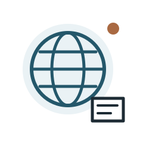
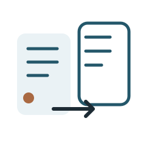
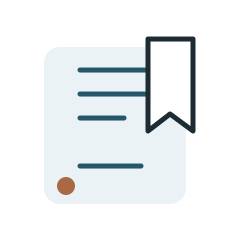

A clearer way to follow the news
Stay informed.
Keep your focus.
International headlines. Local stories. The sources you choose, with alerts that fit your day.
iOS & Android · Beta in preparation

Breaking News
Latest
Your sources. A clearer picture.
⌕ Search headlines
All topicsWorldTechnology
WorldA headline. More than one perspective.Your selected sources
International & LocalThe stories closer to home.Your selected sources
◉☷▱⚙
Your news. Your timing.Choose the topics that deserve an alert.
Illustrative interface
Read without signing upEnglish & SpanishYou choose your sources
Your news
Make room for the news that matters.
Follow a bigger picture without losing sight of what is happening around you.

Choose your sources
Build your feed around the publishers you want to follow. Open each story on its original website.
Near and far
Start with Spain or the United States. Keep local topics alongside international headlines.

Keep it for later
Save a headline when you want to come back to it. Your reading, at your own pace.
Your news. Your timing.
An alert should
earn your attention.
Turn news alerts on when you want them. Quiet hours make space for the rest of your day; personal alerts add more control with Premium.
Premium
More control.
Less interruption.
Read for free, or choose Premium for more control. One subscription covers every country edition when you sign in with the same account.
Plans and local prices will appear in the app when subscriptions are available. Beta purchases use store test environments.
- Search headlines
- Read without ads
- Add notes to saved articles
- Choose alert categories
- Follow several local places
- Exclude topics and keywords
A new way to follow
what happens next.
We are preparing the first iOS and Android beta. Have a question? We would like to hear it.